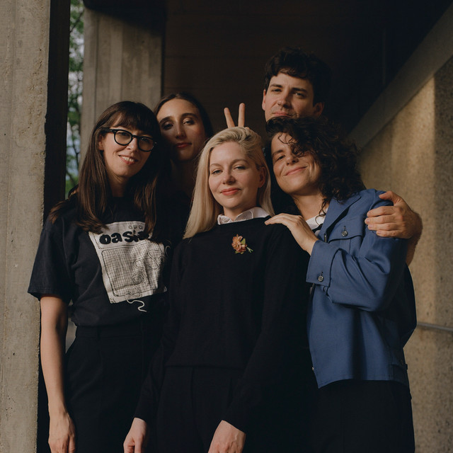
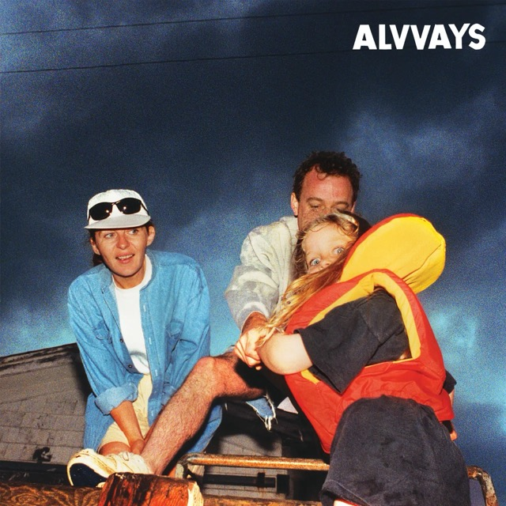

Discover Indie Rock's Brightest Stars
Introduction
Indie rock is built on the passion and creativity of countless talented musicians, each with a story to tell. On this page, we shine a spotlight on both up-and-coming artists and established acts who continue to shape the sound of the indie scene. Whether they’re experimenting with new sounds or sticking to classic roots, these artists are pushing the boundaries of what indie rock can be.
Featured Artist of the Month: Alvvays
From their humble beginnings in Charlottetown, Canada, Alvvays has been crafting a sound that blends Indie Rock, Pop, and Shoegaze into something entirely their own. Their latest release, "Blue Rev," explores themes of longing and heartbreak, with standout tracks like "In Undertow" capturing the hearts of fans worldwide.
Artist Interviews
The Wisely Brothers Talk About Their Latest Album: A candid conversation about their creative process and musical influences. Belle & Sebastian Opens Up About Touring and Finding Their Sound: Insights into the highs and lows of life on the road. Discover New Music: Explore our curated playlists and links to streaming platforms where you can dive deeper into each artist’s work.
